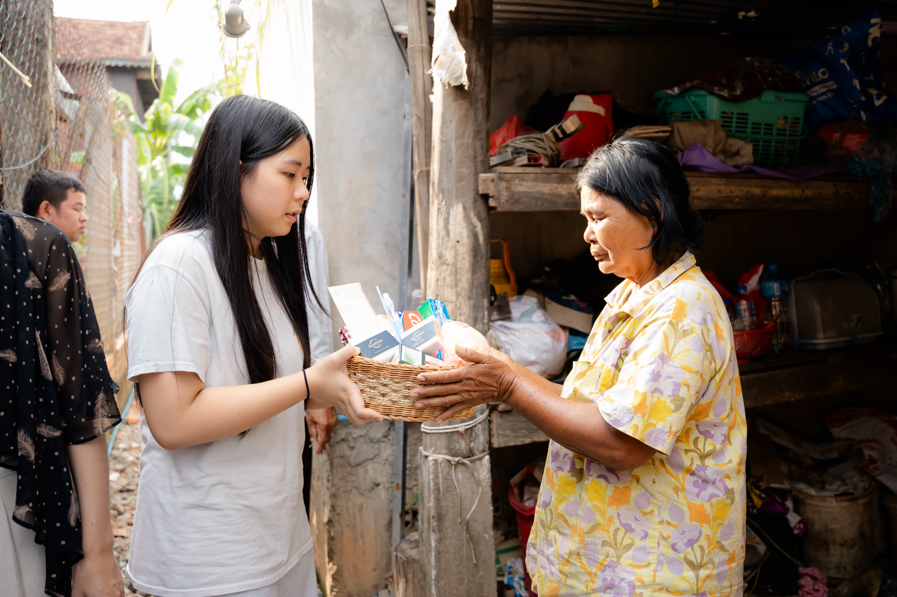

Sharing Hygiene Awareness
ANAMAY was created with the hope of helping improve hygiene in rural communities in Cambodia. As a first small step, we provide hygiene products such as our handmade soap, toothpaste, shampoo, and toothbrushes to support families in their daily care. It may be a simple contribution, but we believe that small acts of care can bring comfort, dignity, and better hygiene to people who need it.
